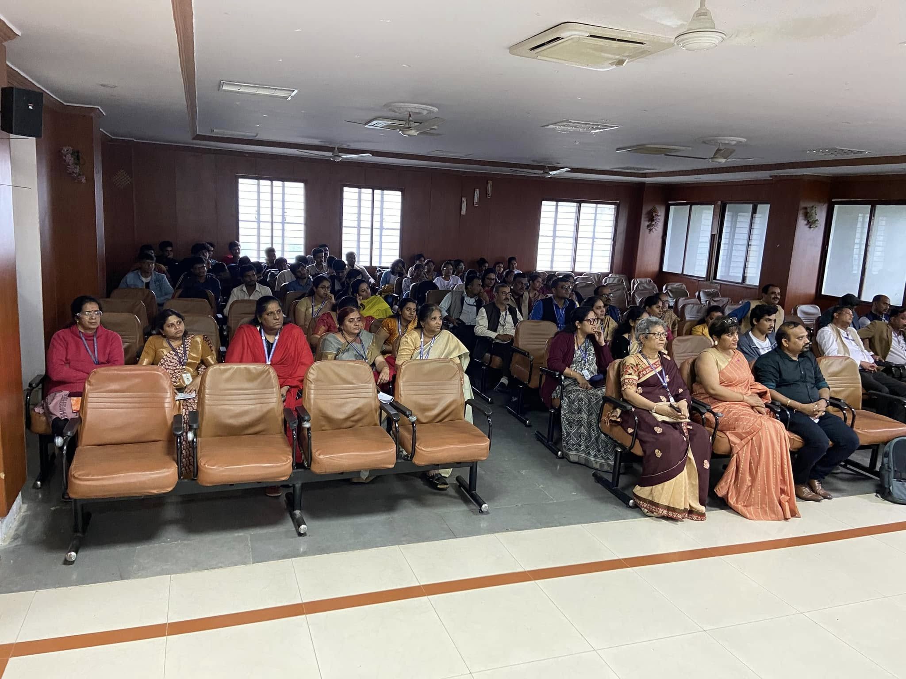
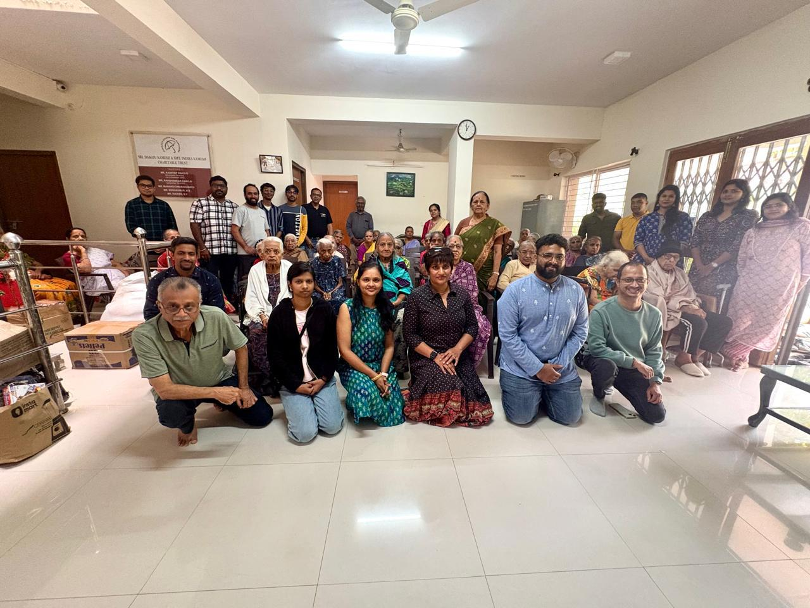
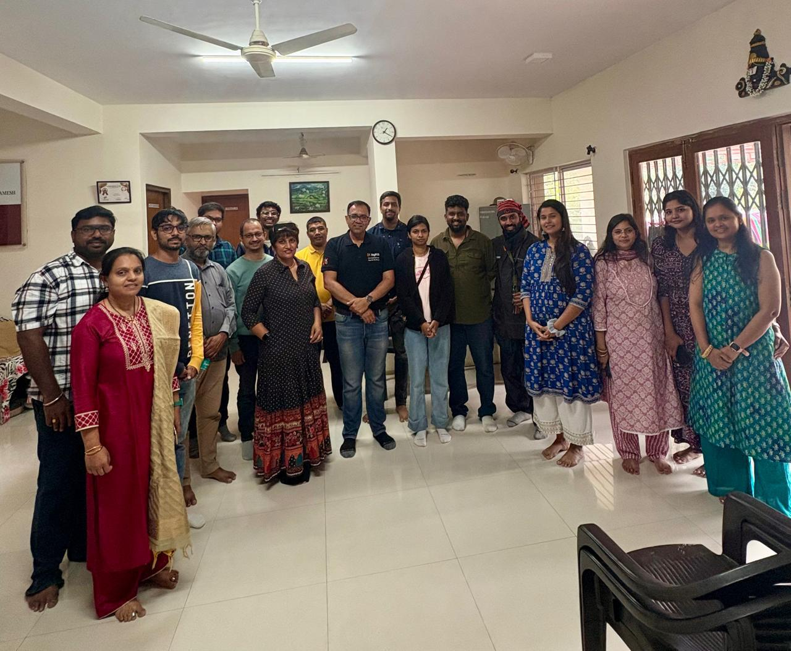
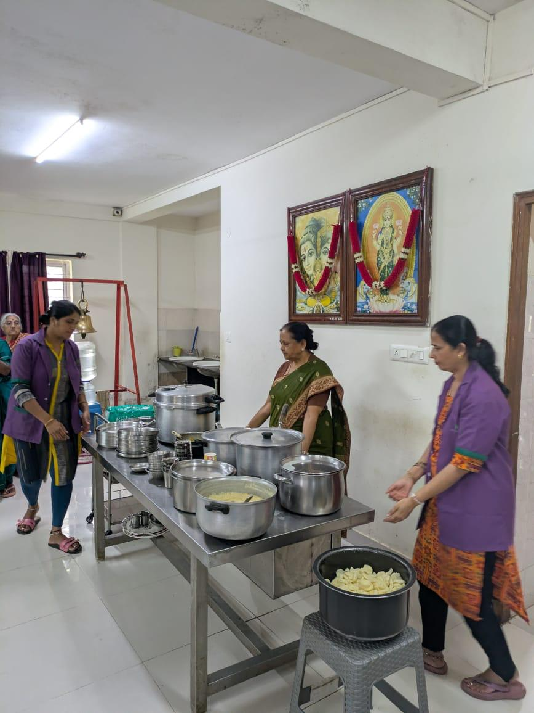
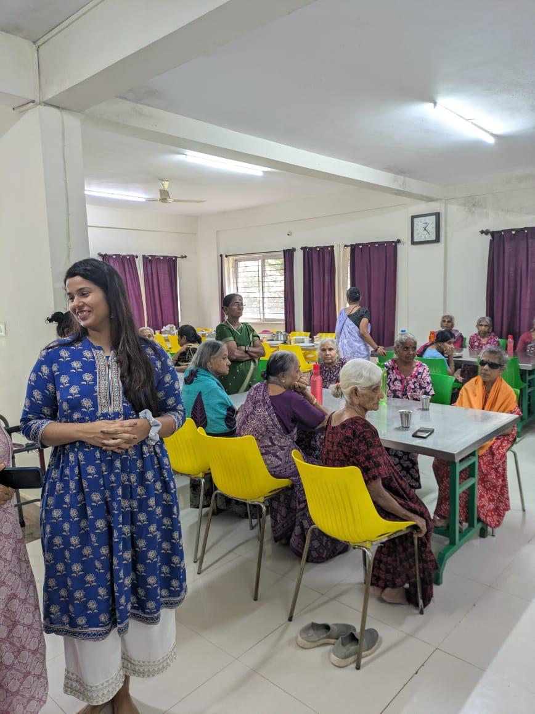
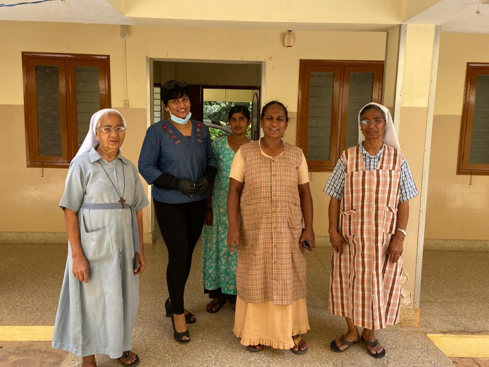

Active Projects
Past Drives
🍱 Fighting for Hunger 16 photos


📚 Project Gyaan 17 photos


🏳️⚧️ Transgender Empowerment 17 photos


🏠 Community Outreach — Old Age Homes 8 photos


🎤 Nikshi Tech Talk Series 4 photos




🏢 CSR Initiative 6 photos






💛 Gerizim Trust Drive 7 photos